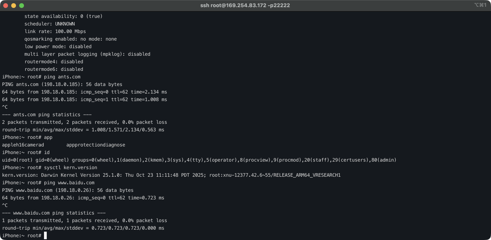
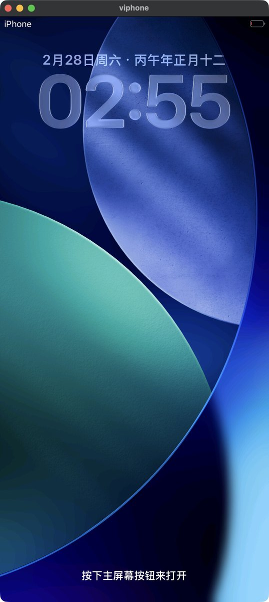
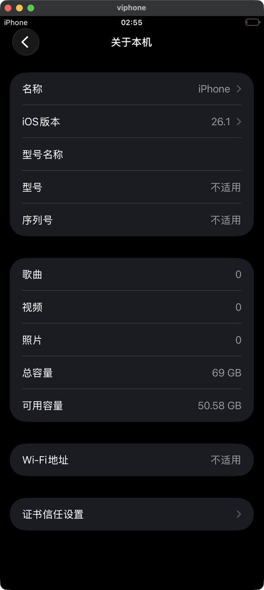
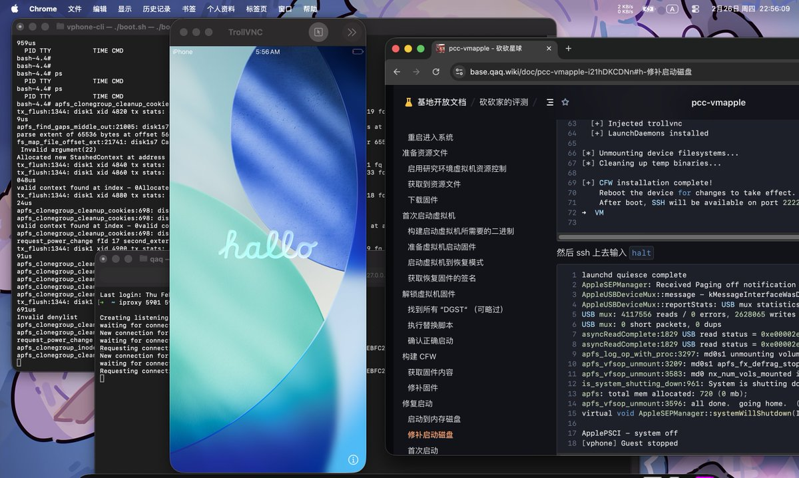

Lakr大佬太强大了，在macOS（ARM）下运行iOS26.1越狱虚拟机（真机环境）。
实测macOS 15.3以上开始就行，从这个版本才开始有security research的内核参数，不开启这个话没有对应的sdk。
组员重启到禁用SIP和AMFI才可以使用Apple的Virtualization.framework启动iOS虚拟机～
根据她最新的推文，已经解决了iOS26.3的启动。项目地址：https://t.co/HEcs8OlUfk

实测macOS 15.3以上开始就行，从这个版本才开始有security research的内核参数，不开启这个话没有对应的sdk。
组员重启到禁用SIP和AMFI才可以使用Apple的Virtualization.framework启动iOS虚拟机～
根据她最新的推文，已经解决了iOS26.3的启动。项目地址：https://t.co/HEcs8OlUfk




Huge thanks to @wh1te4ever and I have done booting iOS 26.1 on macOS 26.3. I have replace tart with my own implementation called vphone-cli (remove unused OCI mgmt from tart) and replace all patches with capstone so in theory it should also work on later release of iOS. Have fun. https://t.co/DjOotHcihx